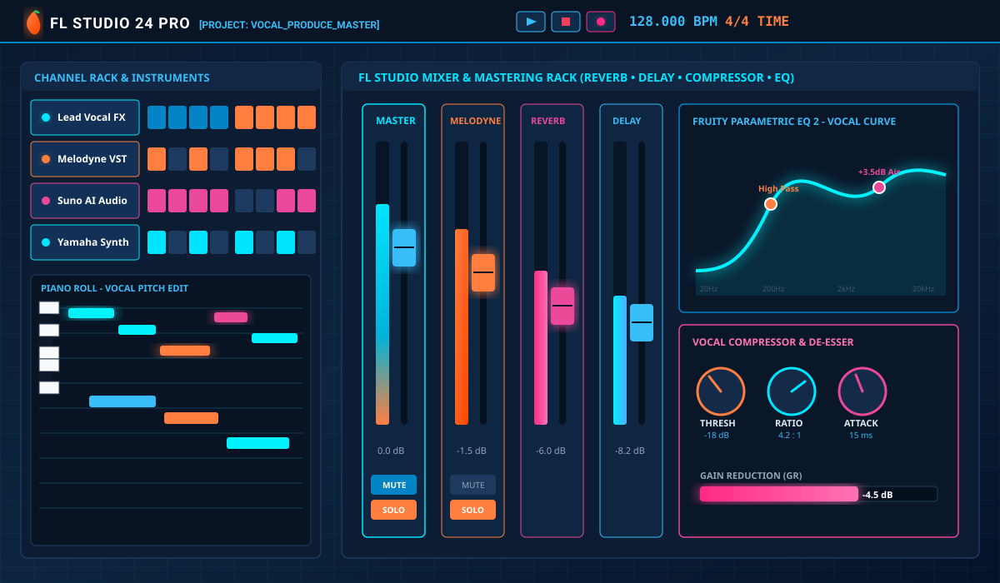
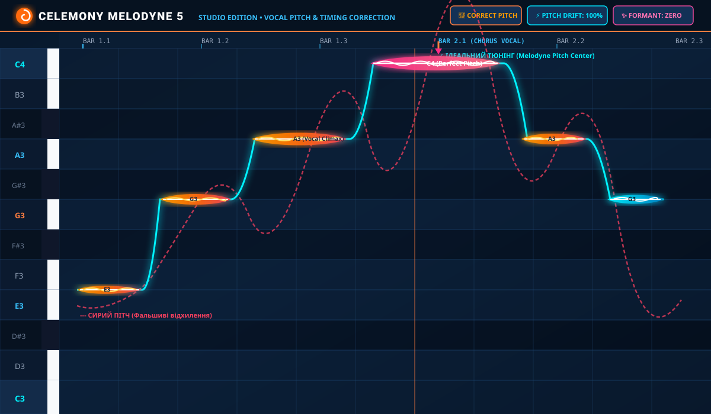
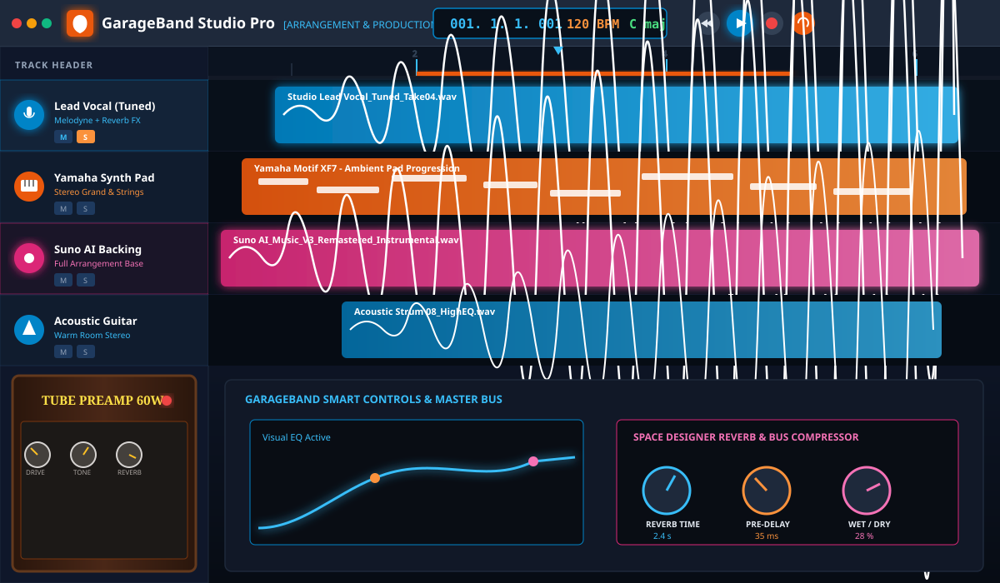
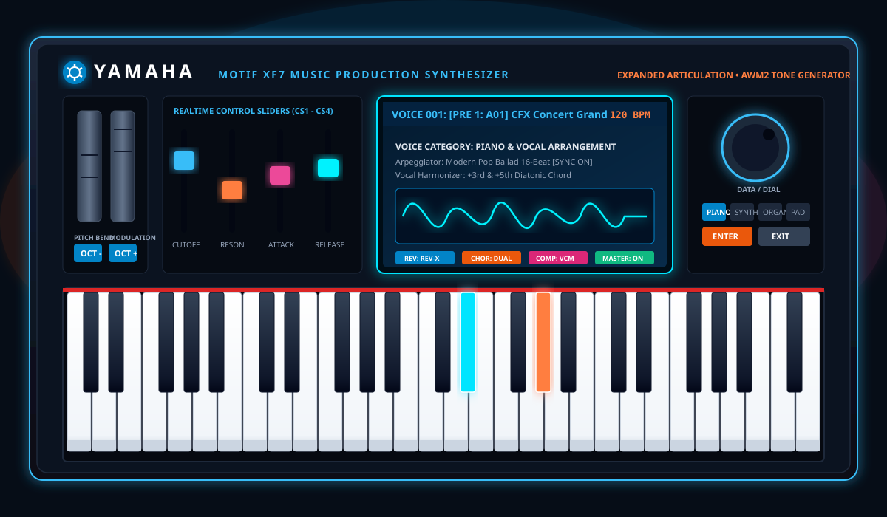

Почуйте на власні вуха магію обробки звуку! Інтерактивне миттєве перемикання між сирим записом без обробки та готовим студійним звучанням з ювелірним тюнінгом, просторовою реверберацією, щільною компресією та стерео-делеєм.
Натисніть Play та перемикайте кнопки «ДО» і «ПІСЛЯ» прямо під час відтворення треку!
Виберіть або перетягніть мишкою сюди аудіофайли (MP3, WAV, M4A, OGG):
Перетягніть аудіо сюди або натисніть:
Перетягніть аудіо сюди або натисніть:
Повний цикл створення пісні: від аранжування та підбору гармоній до детального тюнінгу вокалу та фінального мастерингу.
Ювелірне ручне виправлення кожної фальшивої або невпевненої ноти у Celemony Melodyne. Вокал звучить кришталево чисто, професійно та природно — без роботизованого звуку, зі збереженням живих емоцій артиста (або зі стильним Auto-Tune ефектом за вашим бажанням).
Студійна обробка голосу: правильна динамічна компресія, щоб вокал сидів монолітно в міксі, глибока просторова реверберація для об'єму, стильний темповий стерео-делей, хірургічна еквалізація та видалення різких звуків (деессер).
Створення сучасного аранжування в програмі Suno з подальшим професійним доопрацюванням. Підберу ідеальний жанр, настрій, темп та структуру під ваш текст або вокальну мелодію, зроблю розділення доріжок (стемів) та їх фірмове доведення до розуму.
Живий супровід та аранжування на синтезаторі Yamaha. Живе фортепіано, теплі аналогові педи, струнні групи, басові лінії та ритмічні гармонії. Ідеально підходить для душевних балад, естрадних пісень, романсів або каверів під клавішні.
Продакшн та створення повноцінних мінусовок у середовищі GarageBand. Поєднання віртуальних барабанів, гітарних підсилювачів, синтезаторів та лупів. Швидка та якісна реалізація треку для сольних виконавців і авторів пісень.
Фінальний етап підготовки треку до релізу на Spotify, Apple Music, YouTube та радіо. Доведення гучності до комерційних стандартів (-14 LUFS), частотний баланс, розширення стереобази та м'яке аналогове лімітування без перевантажень.
Кожна заставка нижче демонструє реальне робоче середовище. Ви можете переглянути їх у високій якості або встановити як фонову заставку сайту!

DAW • Зведення • МікшерПотужна робоча станція, де відбувається зведення каналів вокалу, налаштування шин реверберації, делею, параметричного EQ та фінального мастеринг-ланцюга.

Pitch Correction • ТюнінгЕталон світової звукорежисури для ручного тюнінгу вокалу. Ювелірне переміщення нот на точні щаблі тональності, згладжування перехідних коливань та контроль формант голосу.

Apple Music Production • АранжуванняЗручне середовище для аранжування, запису живих інструментів, складання партій під вокал та створення мінусовок з автентичним аналоговим забарвленням ламп та підсилювачів.

Hardware • Живий синтезатор • КлавішніЛегендарні фортепіанні тембри Yamaha CFX, насичені аналогові пади, синтезаторні ліди та акомпанемент. Жива музична експресія за допомогою коліс Pitch Bend, Modulation та чутливих клавіш.
Чотири простих кроки від вашої чернетки до комерційного звучання.
Аудіофайл вокалу (запис на мікрофон або навіть диктофон), мінусовку чи ваш текст із побажаннями.
Я роблю ювелірний тюнінг нот у Melodyne, накладаю реверберацію, делей, компресію або пишу аранжування.
Ви слухаєте демо версію треку ДО і ПІСЛЯ обробки, вносимо необхідні правки за вашим бажанням.
Ви отримуєте повністю готовий трек у максимальній якості WAV та MP3, готовий до публікації на стримінгах.
Напишіть мені в будь-який зручний месенджер або заповніть форму праворуч. Розкажіть про ваш проект, надішліть демо або запитайте про ціну — я з радістю проконсультую!